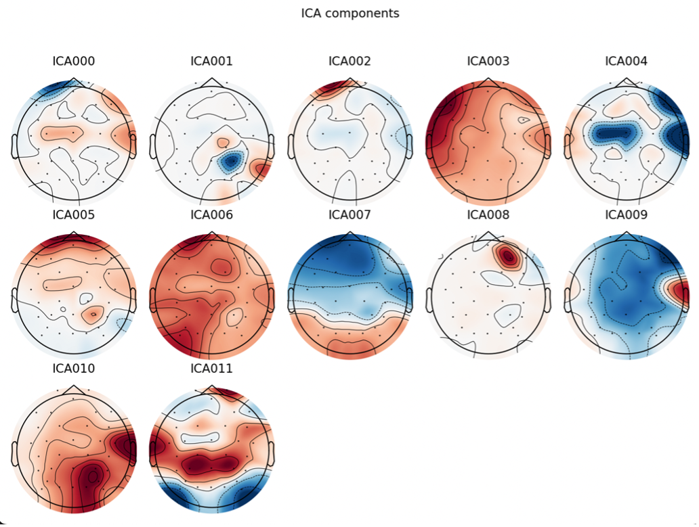
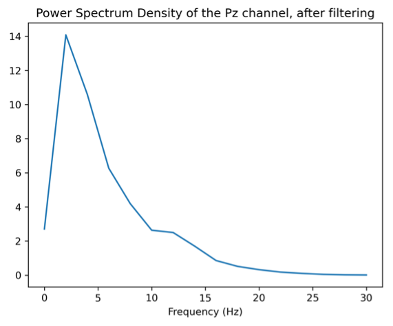
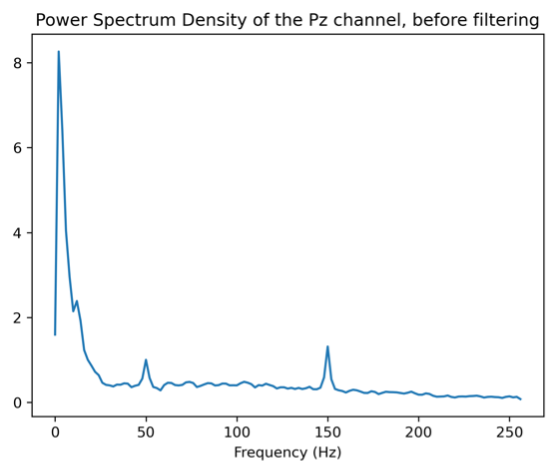
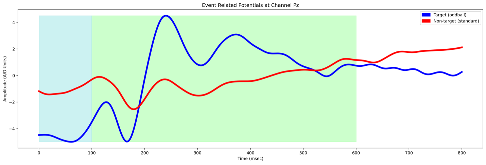
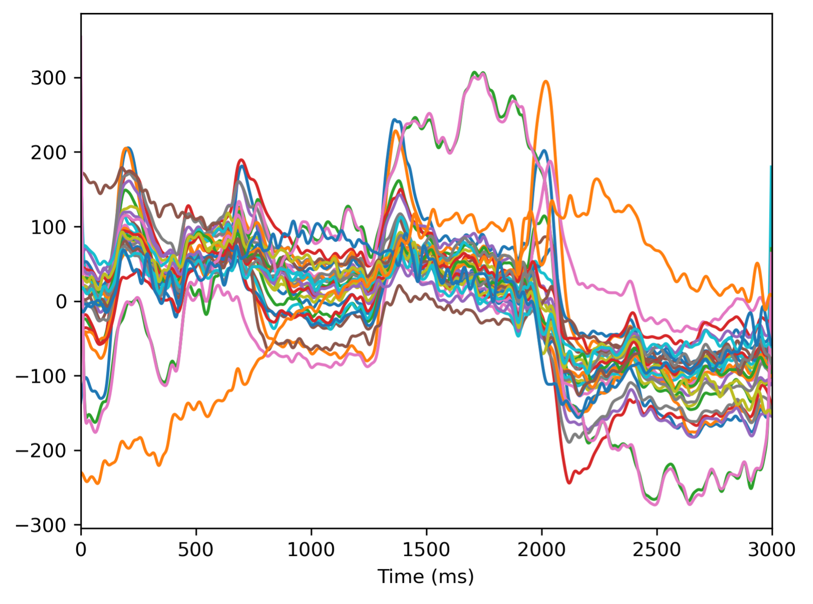
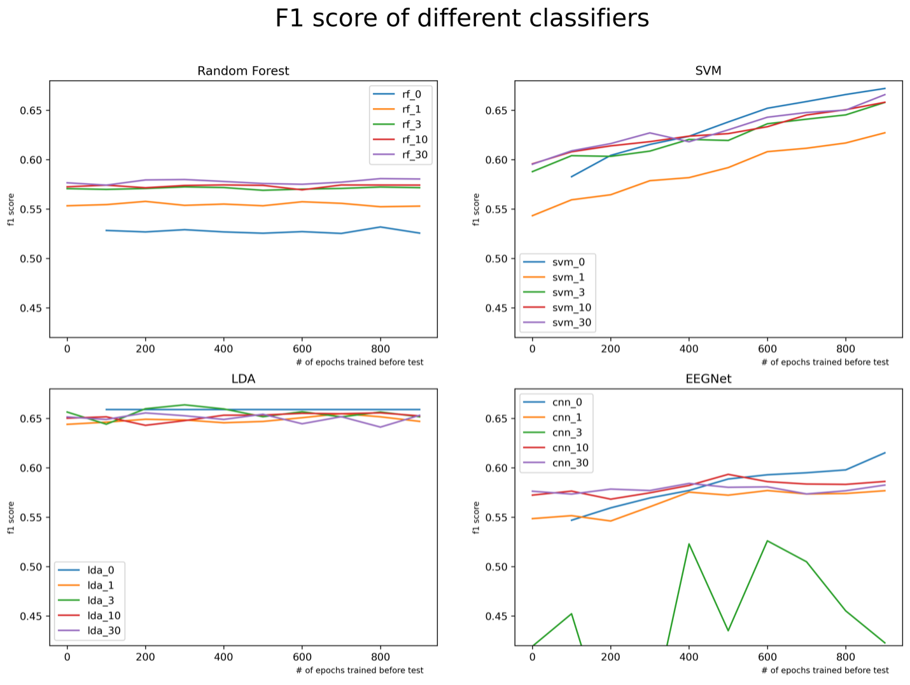
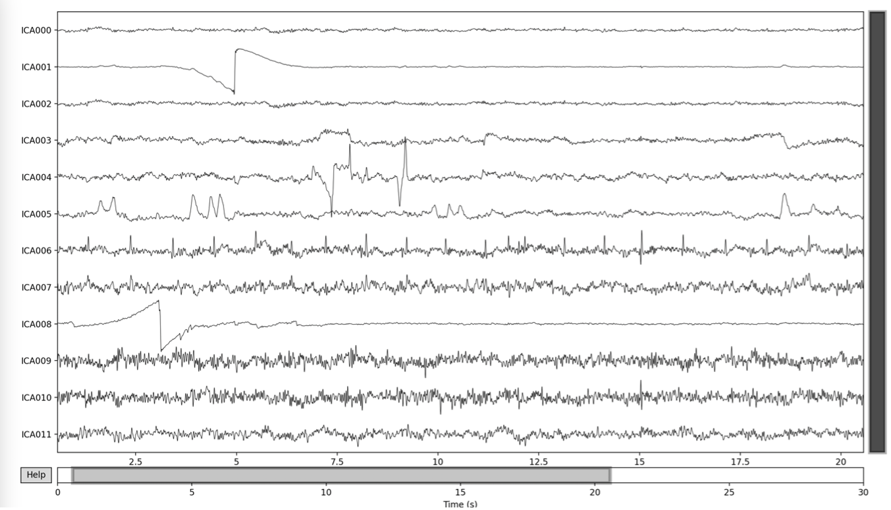
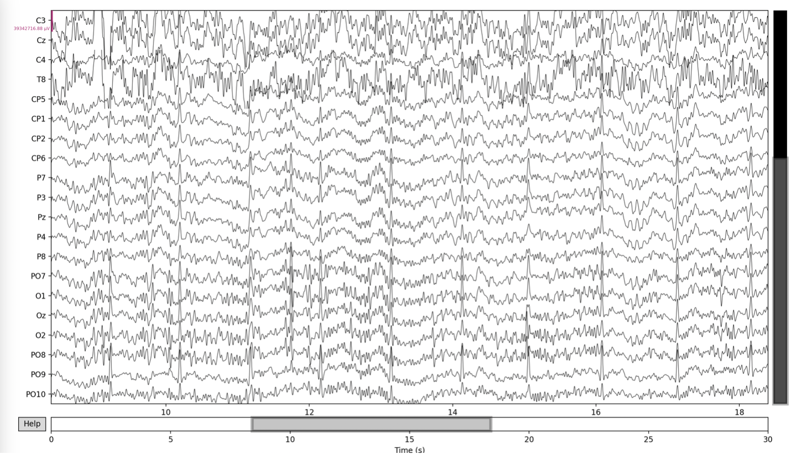
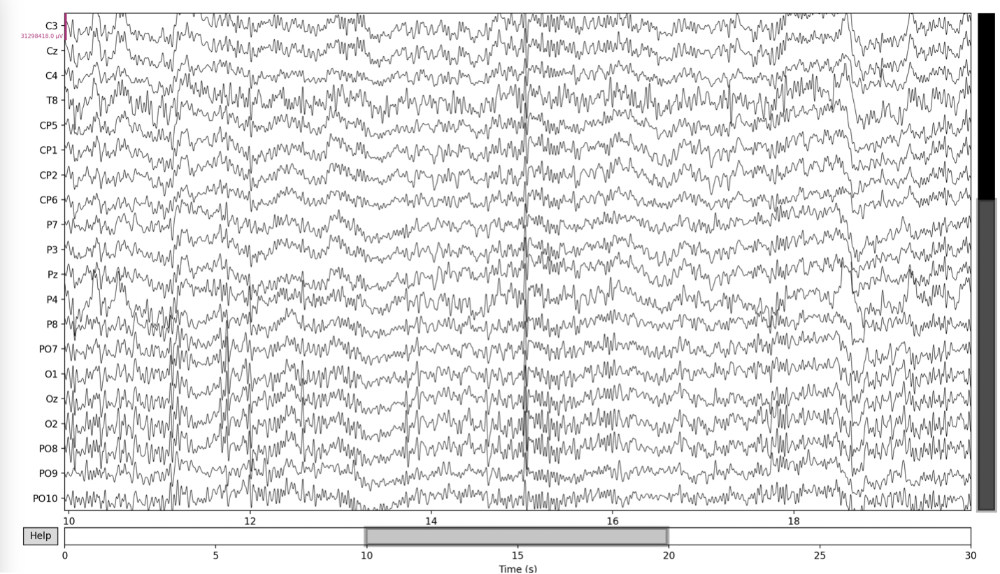
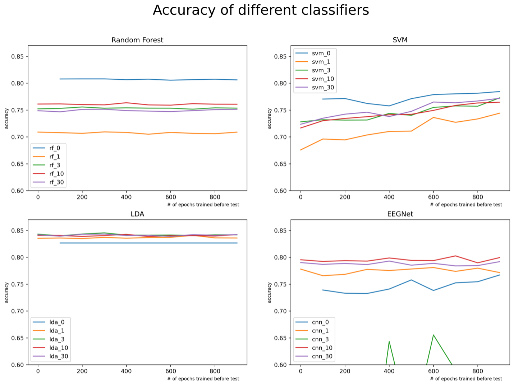

For classifying P300 event-related potential, usually need prior knowledge about the EEG signal during the target and non-target stimuli. However, different classifiers need different amounts of data to achieve a usable classification ability. In this final project, I explored 4 different classifiers and compared their generalization performance on one P300 dataset which took place in GIPSA-lab, 2015. The dataset includes 43 participants. There are 4 classifiers involved in this project, which are LDA, SVM, Random Forest, and EEGNet. They are fed with similar epochs, merely adjusted based on each classifier’s requirement. The metric to measure their performance is F1, since the class is imbalanced. The result shows that the LDA has the high and most stable performance, and the SVM shows the potential to have the highest F1 with more data from the same participant who has been tested on. Overall, based on the procedures and implementation used in this project, the number of pretraining date does not impact much on the performance; the different type of classifier shows a relatively greater influence.
Code for this project: https://github.com/XiaonanFu-ucsd/COGS189-final-project
P300 ERP is evoked when a person perceives a target stimuli, and it associates with the decision-making process that something important had occurred (Picton, 1992). Therefore, the P300 ERP is a good indicator to show whether the event is important for the person. In this scenario, the event is known from the outside, but what the person wants is something unknown. The P300 ERP can tell whether the event is the target, given that the event happened. In application, the P300 ERP can be used to build speller, or to control a cursor to move.
P300 ERP changes among population and time. For doing the classification of P300 ERP, the system need to know the P300 ERP of the user, or use some prior knowledge about P300 (Ramele et al., 2018). An ideal system does not need training, or very short training, before someone uses it. Hence it challenges the system to be accurate with a small amount of data, usually in non-clinical applications. If the system can learn the common pattern of P300 before a user uses it, then the amount of data needed for training will be greatly reduced, making the BCI convenient to use.
In this project, I explored 4 different classifiers, as a part of the P300 system, to see how they perform across participants. With the different levels of pretraining data, I compared how much fine-tuning data, i.e. training data, is required to achieve a good performance. To fairly compare each classifier, everyone received the epochs from the similar preprocessing method. Some classifiers cannot utilize parallel computing. To make the training possible and can be done in a reasonable time, they may only use a portion of the data, such as 3000 observations (one observation is a time window after a event). Besides, classifiers receive different numbers of time samples within one observation, due to the efficiency of the algorithm. All the classifiers should finish the training within a few seconds.
There are three hypothetical factors that may affect the generalization performance: amount of pretraining data, amount of training data, and the type of classifier. For each classifier, it gets a certain level of pretraining, and then gets certain amount of training on the user’s EEG data. All of them will test on the same set of data. In summary, there are 3 stages: pre-train, training, and testing. Their performance will be compared using the f1 score.
The dataset of the project includes 50 participants, using 32 active wet electrodes, with a visual P300 BCI videogame named Brain Invaders. The experiment took place at GIPSA-lab, Grenoble, France, in 2015 (Korczowski et al., 2019). Based on the document about this dataset, it uses a similar paradigm as the P300 speller, which has 36 symbols, and they will flash in groups but not by row and columns (Congedo et al., 2011). After a certain time, the symbol which represents the character in the game moves slowly. To make the P300 more independent, and prevent the participants’ emotions affect the EPR when they play it, the game only shows the score between each round. The experimenter already removes one participant who does not have a visible alpha wave, and six participants have some error in their data.
The sampling rate of the dataset is 512 Hz. The data is not clean before any filtering, and it can be shown by the power spectrum of the data. The peak at 50 Hz is the power line noise. And the peak at 150 Hz is unknown noise.

figure 1. Power spectrum of the Pz channel, after filtering

figure 2. Power spectrum of the Pz channel, before filtering
After filtering using the FIR bandpass filter from 1 to 24 Hz, the power spectrum of the data is shown in the right figure. The bandwidth is used in the example classification code for this dataset (Korczowski et al., 2019). In some other studies, the bandwidth is 0.1 to 30 Hz. Shrinking the bandwidth is reasonable because the P300 ERP is a slow wave. The article from Duncan-Johnson et al. presents that a high-pass filter higher than 0.1 Hz will distort the P300 ERP. In this project, 0.1 or 1 does not make a difference in the performance.
Each participant experienced about 1500 events in the whole recording. The ratio of target versus non-target is one-to-five. After averaging all the time windows for target and non-target, it shows a clear difference between the curve, which means the P300 classification is possible on this dataset (Figure 3)

figure 3. An example of event related potential recored at channel Pz
After filtering, the ICA processing detects abnormal variance in some components. Using MNE, the sources are shown below (Figure 6). The artifacts may be blinking artifacts because of their amplitude (Figure 7). They usually are collected from the frontal electrodes.
The dataset does not include the EOG data, so there is no explicit reference to indicate which component is due to the blinking artifact. I manually select some components which have high amplitude or sudden spikes, and remove them from the data. The result is shown below (Figure 8 & 9). Here is the component I choose: 0, 1, 2, 4, 6, 8.
Since ICA does not make a significant difference in later classification performance, but increases the preprocessing complexity, I decide to not use ICA in the later analysis.
The dataset is split into 2 parts. Subjects 1-30 is the range for pretraining, and subjects 31-43 is the range for training and testing. The pretraining data is used to warm up the classifier, and the training data is used to fine-tune the classifier.
Every channel is used because the P300 ERP is not localized to a specific area. If the Random forest and LDA only use the Pz channel, the f1 score is much lower than using all the channels. Although Pz channel is the most informative channel for P300 ERP, seemingly it is still too noisy to be used alone.
For P300 classification tasks, the time window after the event is most informative. Since the system does not need to know when is the event because the event time is known, it is unnecessary to feed in full series of EEG data and let the system decide whether the time window is related to the event. After filtering the data from 1 to 24 Hz, the data is epoched into 800ms windows after the event. 800ms should be long enough to capture the ERP because P300 ERP is usually between 300 to 500 ms with respect to the person’s age (Picton, 1992). Also, some papers use 800ms windows to capture the P300 ERP (Oralhan, 2019).
Observations have different mean and variance. To make the classifier more robust, the data is normalized by subtracting the mean and dividing by the standard deviation. Zeroing the average can force all observations into the same range. Normalizing the variance by dividing every observation by its own standard deviation can uniform the amplitude of the wave, and allow the classifier to extract more information from the pattern and changes.
This is an example time window from participant 3, after filtering and normalization (Figure 4). All data undergoes the above preprocessing. However, the classifiers may need other modifications to make the data fit their requirement.

figure 4. An example of a time window after filtering and normalization, 3-second segment of filtered data, from subject 3.
Random Forest is an ensemble method widely used in the industry. It is non-linear and can easily handle high-dimension data. The ensemble attribute of Random Forest makes it can compute parallelly, which is suitable for large datasets.
Before training the Random Forest, each observation subtracts the mean of the baseline, which is 0 - 100 ms after the event. the ERP start is set to 200ms, and the ERP end is set to 800ms. The ERP windows are split into 18 segments and the mean of each segment is used as the feature. Observations are reshaped into a vector of 18 * 32 = 576 features.
The Random Forest contains 75 decision trees, and the maximum depth of each tree is 75. The hyperparameters are found by grid search. To fix the imbalance of the data, the class weight is set to 0.5:20. I used this large ratio because the false negative is much large than the true positive in other settings. This model does not support incremental training in scikit-learn, so the pretraining process actually happens in the trainging process, by merge the pretraining data and the training data.
Support Vector Machine is sensitive to dimensionality, and too many samples make it hard to train. Therefore, I set the maximum number of training data to 3500. It has the same preprocessing as Random Forest, but only uses 8 segments of the ERP windows. Hence the feature vector is 8 * 32 = 256. The class weight is 0.5:2. This SVM uses linear kernel, and the constraint is set to 0.1. The model does not fit if it uses RBF as the kernel.
SVM does not support incremental training, so the pretraining process is similar to Random Forest. However, the SVM has a limitation on the amount of training data. If pretrain + train > 3500, the array will be filled with training data first, and then use shuffled pretraining data to fill the rest. The pretraining data are from different subjects, so shuffling makes the final training data be more diverse.
Linear Discriminant Analysis is a linear classifier and it is efficient to train. However, seems like the scikit-learn implementation of LDA has bugs on the Linux platform. With a high amount of training data, approximately 3000, the system stops responding. Therefore, I set the maximum number of training data to 1500. It uses the same method as SVM to handle oversize training data. It has the same preprocessing as Random Forest, but only uses 6 segments of the ERP windows, the shape of the feature vector is 6 * 32 = 192.
EEGNet uses the convolution neural network and the power of deep learning to alleviate the process of feature extraction (Lawhern, 2018). According to the paper, it performs well on various EEG datasets, including P300, SMR, and ERN. The recommended setting of EEGNet is to downsample the data to 128 Hz, and embed 3 convolutional layers as filters and one fully connected layer as output. In my implementation using PyTorch, the first convolutional layer has 16 kernels with size of 1 * 64. The second convolutional layer is a depthwise filter with 32 kernels. The third one is a separable conv2d with 32 depthwise filters (132) and 64 pointwise filters (11). This design allows the CNN to have enough filters to fit different patterns, and wide enough to see a slow wave such as P300. The activation function is ELU, and the dropout rate is 0.3 to prevent overfitting. There are batch normalization between layers, and two average pooling layers to reduce the dimensionality. The reference code can be found at (https://github.com/vlawhern/arl-eegmodels/blob/master/EEGModels.py)
Since the convolutional layer is good at capturing temporal ad spatial information, I did not subtract the baseline. The data is downsampled to 128 Hz, and the full observation is used as the feature. The maximum number of iterations of epoch is set to 200. The batch size is 512; the learning rate is 0.001; the loss function is cross entropy because it is convenient to set class weight, which is 1:5.4.
Among all the 4 classifiers, EEGNet is the only one that can be trained incrementally, which means the model’s weights carry over from the previous training. The training process will only include the data from the current subject.
Pretraining amount have 5 levels: none, 1, 3, 10, 30 subjects. For example, if the pretraining count is 3, theoretically, the model will be pretrained with the first 3 subject’s full records.
The training amount have 10 levels, which are 0 to 900. For all 13 subjects in the testing range, the model will be trained with the first 0 to 900 data from each subject, and then tested on the data after index 900. The process is independent for each testing subject. For example, when I evaluate the EEGNet-3 model (i.e. EEGNet pretrained with 3 subjects), the program load the pretrained model, and directly tests on the data[901:] from subject 31, because now the training amount is 0. Then, the program load the pretrained model again, and train on the data[:100] from subject 31, and test on the same data[901:]. The program will repeat this process for all 13 subjects. The f1 score is the average among them, given a certain pretraining amount and training amount. The classifier must be trained with something, so the pretraining and training will not be 0 at the same time.
The F1 macro score is a suitable metric for a binary classification problem. It shows the balance between precision and recall, and it considers the accuracy of the positive and negative classes under the same priority. Accuracy itself is not a good metric for this problem, because the data is imbalanced. If the model always predicts 0, it will have high accuracy, but the precision and recall will be very low for positive class. For the F1 score, if the model always predicts 0, the F1 score will be 0.148 in this case. I did not use AUC because it need the model to output the probability, which needs some modification to the EEGNet and rerun the test.
The result shows that the SVM is most sensitive to the amount of training. With more data from the current user, it performs better. The one-way ANOVA that evaluates the influence of training amount on the f1 score also supports this result (p = 0.00). Other classifiers are not sensitive to the training amount.
However, the plot and the ANOVA show a disagreement about the pretraining. Only the plot of Random Forest indicates that it is sensitive to the pretraining amount. For other classifiers, the ANOVA p-value is very close to 0.00, but there is no clear trend in the plot. In addition, the EEGNet_3 curve is obviously abnormal, which shows a violent variation. Maybe there is some error during the pretraining process.

Figure 5: The f1 score for each classifier is shown in this plot. The x-axis is the training amount, and the different lines represent different pretraining amount.
| Random Forest | SVM | LDA | EEGNet | |
|---|---|---|---|---|
| Pretrain | 0.000 | 0.001 | 0.000 | 0.000 |
| Train | 0.925 | 0.000 | 0.765 | 0.113 |
Table 1: the p-value from one-way ANOVA; A lower p-value shows a higher likelihood that the factor causes the change.
Random Forest is unaffected with respect to the training amount, but its performance increase with more pretraining data. It can be the result that pretraining data is much more than the training data. Even if it just pretrained with 1 subject’s data, it still gets about 5000 observations, because subject 1 has 5000 trials. The model saturates after 10 subjects, about 18000 observations, and the f1 score is mediocre.
SVM shows a clear trend that more training data will lead to much better performance. The pretraining does not impact much; the reason can be the 3500 limitations, which makes it cannot fully utilize the pretraining data. With more training data, it has the best performance. SVM is optimal for long term and personal BCI.
LDA has the highest performance among all 4 classifiers, and the pretraining and training do not affect its performance. It makes LDA a good choice in the application of P300 BCI in general, if the data is limited.
EEGNet is slightly better than the Random Forest, but clearly worse than SVM and LDA. The pretraining does not improve its generalization. Seems like the training data amount has a positive impact, but the statistical test does not support this statement. It is possible that due to my implement and filter design, it overfits the pretraining and training data, since the accuracy is close to 1.00 on those parts.
I was not expected that the most challenging thing is to make LDA and Random Forest fit this dataset before I wrote the code to compare classifiers. Using these two models, I tried many different ways to make them stop classifying every point as negative, such as adjusting the class weight, removing artifacts, only using certain channels, and combining multiple classifiers to let them vote. After weeks of experiments, I accidentally found that the most significant factor is the step between preprocessing and training, which is reshaping the feature vector. The original shape of each time window is (T, C), such that T is the number of time points, and C is the number of channels. In this case, reshape function breaks the temporal structure, leading to a complete mixture in high dimensional space. After changing the shape to (C, T), the model can finally learn the temporal information.
The result shows that the traditional machine learning methods still have their own advantage in P300 BCI. The LDA and SVM cannot fully utilize the pretraining data and computing power, but they still perform well with a limited amount of data, which is important in real-world EEG applications. EEGNet has the potential to be an ideal model since it is good at capturing temporal and spatial information, and it can be trained incrementally. However, at least in my implementation and this dataset, EEGNet fails to meet my expectation overall.
It is worth mentioning that classification is just one step in the BCI pipeline, and BCI application is much more than accurate. How to use the classification result, how to collect the data in a comfortable and efficient way, how to make the system robust, and many other aspects need to be considered if a BCI is for users, rather than research only.
Figure 6: the source of each ICA component



